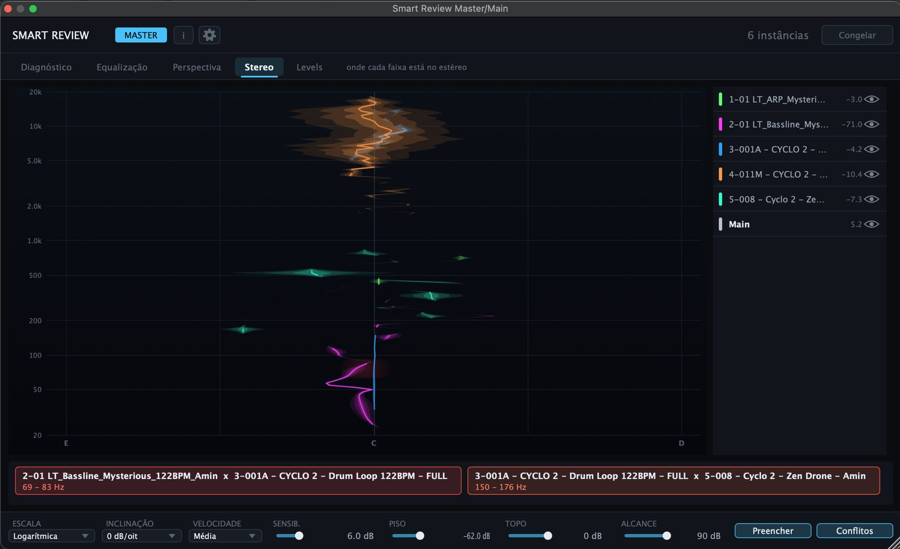
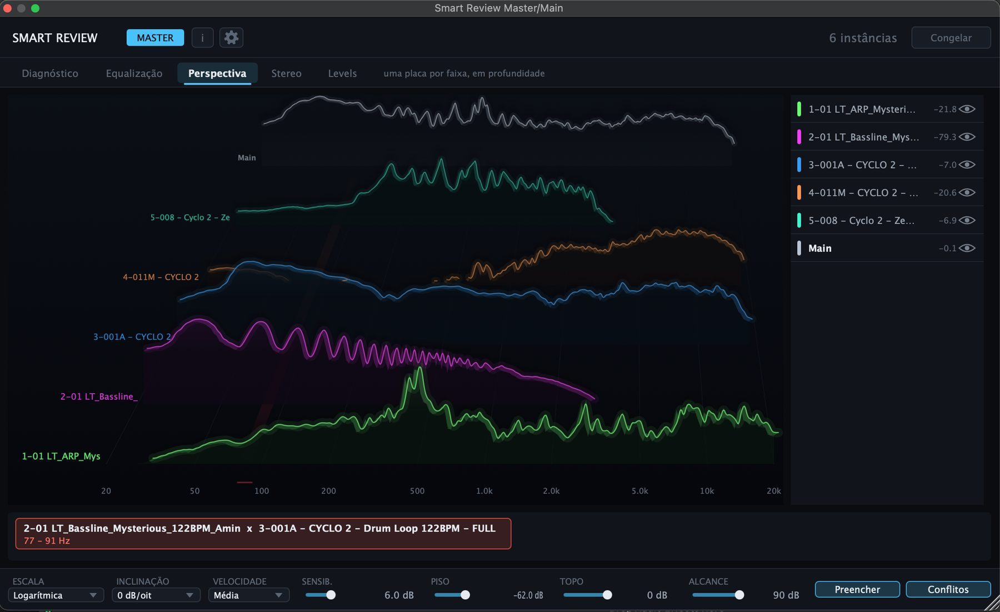

Your mix has problems you have stopped hearing. Smart Review writes them down. Sua mixagem tem problemas que você já não escuta. O Smart Review escreve quais são.
A Console on every channel, a Master on the bus. It measures the whole project at once and hands back a list of what to fix — in sentences, in the order the problems appeared, each with the moment in the music where it showed up. Um Console em cada canal, um Master no barramento. Ele mede o projeto inteiro de uma vez e devolve uma lista do que corrigir — em frases, na ordem em que os problemas apareceram, cada uma com o momento da música em que surgiu.

Five readingsCinco leituras
The same mix, looked at five ways A mesma mixagem, olhada de cinco formas
Each tab answers a different question. The Master carries all five; a Console on a channel carries the three that make sense from where it sits. Cada aba responde a uma pergunta diferente. O Master traz as cinco; um Console num canal traz as três que fazem sentido de onde ele está.
DiagnosisDiagnóstico
It does not hand you a graph to interpret. It tells you what is wrong. Ele não te entrega um gráfico para interpretar. Ele diz o que está errado.
Each finding is one sentence, with the number that produced it and what that number costs you: 2.4 LU above −14 LUFS. The platform turns the volume back down on playback, so this extra gain does not make the track louder — only less dynamic. Findings carry REVIEW or FIX, and they hold still: each problem is listed once, with the moment it appeared, and stays there until you listen again. Cada achado é uma frase, com o número que o produziu e o que aquele número te custa: 2.4 LU acima de −14 LUFS. A plataforma abaixa o volume de volta na reprodução, então esse ganho extra não deixa a música mais alta — só menos dinâmica. Os achados vêm marcados como REVISAR ou CORRIGIR, e ficam parados: cada problema entra uma vez, com o momento em que apareceu, e permanece até você ouvir de novo.

EqualizationEqualização
Every track's spectrum on the same axes, and the bands where two collide. O espectro de cada faixa nos mesmos eixos, e as bandas onde duas se atropelam.
Masking is not a property of one channel — it is a relationship between two, and a single-track analyser can never show it. Here the overlap is shaded red and named underneath, with both tracks and the exact interval. Mascaramento não é propriedade de um canal — é uma relação entre dois, e um analisador de uma pista só nunca consegue mostrar isso. Aqui a sobreposição fica sombreada em vermelho e nomeada embaixo, com as duas faixas e o intervalo exato.

Stereo
Two tracks on the same frequency are not fighting if they are on opposite sides. Duas faixas na mesma frequência não estão brigando se estão em lados opostos.
The analysis reads left and right separately, so conflict detection knows where each track sits in the panorama and stops calling a false positive on the pair that never met. This tab is the map that shows it: pan across, frequency up. A análise lê os canais L e R separados, então a detecção de conflito sabe onde cada faixa está no panorama e para de acusar o par que nunca se encontrou. Esta aba é o mapa que mostra isso: panorama na horizontal, frequência na vertical.

Levels
Loudness, true peak and how much room every track has left. Loudness, pico real, e quanta folga cada faixa ainda tem.
Integrated loudness to ITU-R BS.1770, true peak with oversampling, and the dynamic range between them. Underneath, every track side by side — bar is loudness, mark is peak, the gap between them is the dynamics. There is no per-instrument target: it shows you the balance and lets you decide. Loudness integrado pela ITU-R BS.1770, pico real com sobreamostragem, e a dinâmica entre os dois. Embaixo, todas as faixas lado a lado — barra é loudness, marca é pico, a distância entre as duas é a dinâmica. Não existe alvo por instrumento: ele mostra o equilíbrio e deixa a decisão com você.

PerspectivePerspectiva
When six curves on one graph stop being readable, stack them instead. Quando seis curvas num gráfico só deixam de ser legíveis, empilhe-as.
One pane per track, arranged in depth and labelled. It answers a question the overlay cannot: which track owns which region, when everything is playing at once. Uma placa por faixa, disposta em profundidade e etiquetada. Responde a uma pergunta que a sobreposição não responde: qual faixa domina cada região, com tudo tocando ao mesmo tempo.

The pairO par
Two plugins. Neither one does anything alone. Dois plugins. Nenhum dos dois faz nada sozinho.
The Console goes on every channel you want to see. It measures that channel and publishes it into a shared memory area owned by the system. The Master goes on the master bus, reads all of them, and is where the diagnosis is written. O Console vai em cada canal que você quer enxergar. Ele mede aquele canal e o publica numa área de memória compartilhada do sistema. O Master vai no barramento master, lê todos eles, e é onde o diagnóstico é escrito.
Audio passes through both untouched — they are meters, not processors. Name and colour each Console and those are the names you read on every graph and on every conflict label; when the DAW reports a track name, it is filled in for you. O áudio atravessa os dois sem alteração — são medidores, não processadores. Dê nome e cor a cada Console e são esses os nomes que você lê em todo gráfico e em toda etiqueta de conflito; quando a DAW informa o nome da faixa, ele já vem preenchido.

Beta accessAcesso ao beta
Get the Smart Review beta Pegue o beta do Smart Review
Leave your details and the download links appear right here. I use them to send you beta updates and nothing else. Deixe seus dados e os links de download aparecem aqui mesmo. Eu uso isso para te avisar das atualizações do beta e mais nada.
You're inPronto
Smart Review 1.0.0 beta. There is no installer: the plugins
are .vst3 bundles that go into your VST3 folder, and the steps below
say exactly where that folder is on each system.
Smart Review 1.0.0 beta. Não tem instalador: os plugins são
bundles .vst3 que vão na pasta VST3, e os passos abaixo dizem
exatamente onde ela fica em cada sistema.
Smart Review Console
goes on every channel you want to see; Smart Review Master goes on the master channel
and reads them all. Install both — apart, neither does anything.
Você vai baixar dois plugins: o Smart Review Console vai
em cada canal que você quer ver; o Smart Review Master vai no canal master e lê todos.
Instale os dois — separados, nenhum faz nada.
- Unzip the download. You get two bundles: Smart Review Console.vst3 and Smart Review Master.vst3. Descompacte o download. Você recebe dois bundles: Smart Review Console.vst3 e Smart Review Master.vst3.
-
Open the VST3 folder:
~/Library/Audio/Plug-Ins/VST3/. Finder hides the Library folder, so you will not find it by clicking around — use ⇧⌘G, the Go → Go to Folder menu item, then paste that path and press Enter. Abra a pasta VST3:~/Library/Audio/Plug-Ins/VST3/. O Finder esconde a pasta Library (ela aparece como "Biblioteca"), então você não chega nela clicando — use ⇧⌘G, que é o menu Ir → Ir para a pasta, cole esse caminho e dê Enter. -
Drop both
.vst3bundles in there. Solte os dois bundles.vst3lá dentro. - Rescan your plugins in the DAW. Both appear under the manufacturer Nowhr Dynamics, as audio effects. Console on every channel, Master on the master bus. Mande o DAW reescanear os plugins. Os dois aparecem sob o fabricante Nowhr Dynamics, como efeitos de áudio. Console em cada canal, Master no barramento master.
- Unzip the download. You get two bundles, Console and Master. Descompacte o download. Você recebe dois bundles, Console e Master.
-
Open the VST3 folder:
C:\Program Files\Common Files\VST3\. It is not hidden — paste that path into the address bar of Explorer and press Enter. Every DAW scans this folder by default. Abra a pasta VST3:C:\Program Files\Common Files\VST3\. Ela não é oculta — cole esse caminho na barra de endereço do Explorer e dê Enter. Todo DAW varre essa pasta por conta própria. - Drop both bundles in there. Windows asks for administrator rights; any folder your DAW is set to scan works too. Solte os dois bundles lá dentro. O Windows pede permissão de administrador; qualquer pasta que o seu DAW esteja configurado para varrer serve igual.
- Rescan your plugins in the DAW. Console on every channel, Master on the master bus. Mande o DAW reescanear os plugins. Console em cada canal, Master no barramento master.
Beta support Suporte ao beta
Smart Review is in beta, under active development. Fault reports and suggestions reach me directly over WhatsApp. O Smart Review está em versão beta, sob desenvolvimento ativo. Relatos de falha e sugestões chegam diretamente a mim pelo WhatsApp.
Mini manualMini manual
How to use it, control by control Como usar, controle por controle
1. What it does1. O que faz
Smart Review is a real-time technical review of a mix. Two plugins operate together and see the whole project at once. O Smart Review é uma revisão técnica da mixagem em tempo real. Dois plugins operam em conjunto e enxergam o projeto inteiro de uma vez.
| Plugin | Where it goes, and what it doesOnde entra, e o que faz |
|---|---|
| Smart Review Console | On each channel. Measures that channel's spectrum and publishes it into a shared memory region on the system. Em cada canal. Mede o espectro daquele canal e o publica numa área de memória compartilhada do sistema. |
| Smart Review Master | On the master bus. Reads every published track, draws them together and writes the diagnosis. No barramento master. Lê todas as faixas publicadas, desenha-as juntas e escreve o diagnóstico. |
Both are meters — audio passes through either one unaltered. Capacity: 64 simultaneous tracks, 512 bands per track, 20 Hz to 20 kHz. Ambos são medidores — o áudio atravessa os dois sem alteração. Capacidade: 64 faixas simultâneas, 512 bandas por faixa, de 20 Hz a 20 kHz.
2. Setting up2. Montando a sessão
- Insert a Console at the end of the chain on every channel you want to measure. At the end of the chain it reads the processed signal — what actually reaches the bus. Insira um Console ao final da cadeia de cada canal que você quer medir. No fim da cadeia ele lê o sinal já processado — o que de fato chega ao barramento.
- Insert the Master on the master bus. Insira o Master no barramento master.
- Check the instance count in the header. A figure lower than the number of Consoles you inserted means a channel is not being fed by the transport. Confira a contagem de instâncias no cabeçalho. Um número menor que o de Consoles inseridos indica um canal que não está sendo alimentado pelo transporte.
The track name comes from the DAW when the DAW reports it. When it does not, type it into the field on the Console — it is stored with the project, and it is what appears on every graph and every conflict label. The gear next to the i opens the preferences: interface language, and on the Console whether the track colour comes from the DAW. The language applies to every instance and is saved with the project. O nome da faixa vem da DAW quando ela o informa. Quando não vem, digite no campo do Console — ele fica salvo no projeto, e é o que aparece em todo gráfico e em toda etiqueta de conflito. A engrenagem ao lado do i abre as preferências: idioma da interface e, no Console, se a cor da faixa vem da DAW. O idioma vale para todas as instâncias e fica salvo no projeto.
3. The five tabs3. As cinco abas
| TabAba | WhereOnde | What it showsO que mostra |
|---|---|---|
| DiagnosisDiagnóstico | Master onlySó no Master | What to fix, in sentences. The Master opens here. Clicking a finding takes you to the view that shows it. O que corrigir, em frases. O Master abre nela. Clicar num achado leva até a vista que o mostra. |
| EqualizationEqualização | BothNos dois | Every curve on the same axes. The Console opens here. Todas as curvas nos mesmos eixos. O Console abre nela. |
| PerspectivePerspectiva | Master onlySó no Master | One translucent pane per track, stacked in depth. Uma placa translúcida por faixa, empilhadas em profundidade. |
| Stereo | BothNos dois | Pan × frequency map: where each track sits in the stereo field. Mapa panorama × frequência: onde cada faixa está no estéreo. |
| Levels | BothNos dois | Gain headroom, master loudness, and the balance between tracks. Folga de ganho, loudness do master e equilíbrio entre as faixas. |
How the diagnosis behavesComo o diagnóstico se comporta
The findings do not flicker. Each problem is listed once, with the moment in the music where it appeared, and holds still until you listen again. That is deliberate: a meter that re-sorts itself every frame cannot be read, and a problem that flashes past is a problem you never fixed. Findings are marked REVIEW or FIX. Os achados não piscam. Cada problema entra uma vez, com o momento da música em que apareceu, e fica parado até você ouvir de novo. Isso é proposital: um medidor que se reordena a cada quadro não dá para ler, e um problema que passa piscando é um problema que você nunca corrigiu. Os achados vêm marcados como REVISAR ou CORRIGIR.
4. Reading the graphs4. Lendo os gráficos
- The track whose window you are in is drawn thick and filled; the others sit behind it. A faixa da janela em que você está é desenhada em traço grosso e preenchido; as demais ficam em segundo plano.
- Click a curve to highlight that track. Click outside it to release. Clique sobre uma curva para destacar aquela faixa. Clique fora para liberar.
- With the cursor over the graph, the readout gives the frequency, the nearest note with its offset in cents, and each track's level at that point. Com o cursor sobre o gráfico, a leitura traz a frequência, a nota mais próxima com o desvio em cents, e o nível de cada faixa naquele ponto.
- The note is there because a tuning problem and a masking problem look identical on a plain analyser. A bass peak landing on a note outside the key is a different problem, and a different correction. A nota está ali porque problema de afinação e problema de mascaramento têm a mesma aparência num analisador comum. Um pico de baixo numa nota fora da tonalidade é outro problema, e outra correção.
5. The track list5. A lista de faixas
Down the right-hand side, one row per instance: the colour its curve is drawn in, the name, its live level, and an eye. Na lateral direita, uma linha por instância: a cor com que a curva é desenhada, o nome, o nível ao vivo e um olho.
- The eye hides that curve on your screen only. Double-click — or Alt-click — to solo the track instead. O olho esconde aquela curva apenas na sua tela. Duplo clique — ou Alt+clique — isola a faixa.
- Hide, on a Console, removes that track from the graph for every instance — the setting for a channel nobody needs to see. Ocultar, num Console, remove aquela faixa do gráfico para todas as instâncias — a configuração para um canal que ninguém precisa ver.
- Show all tracks toggles whether the other tracks are drawn inside that Console, which is how you get your own curve alone on screen. Outras faixas alterna o desenho das demais curvas dentro daquele Console, que é como você isola a sua própria curva na tela.
-
A row reading
--is a track playing nothing at that moment. Uma linha marcando--é uma faixa que não está tocando nada naquele instante.
6. Conflicts6. Conflitos
When two tracks concentrate significant energy in the same narrow band, the region is shaded red and a label appears below it naming the pair and the interval. Clicking the label highlights the track involved. Quando duas faixas concentram energia significativa na mesma banda estreita, a região é sombreada em vermelho e uma etiqueta aparece abaixo, nomeando o par e o intervalo. Clicar na etiqueta destaca a faixa envolvida.
Detection reads the left and right channels separately, so it knows where each track sits in the panorama: two tracks on the same frequency but on opposite sides are no longer reported as a conflict. SENSIT. and FLOOR set what counts as relevant; Conflicts turns detection off entirely. A detecção lê os canais L e R separados, então sabe onde cada faixa está no panorama: duas faixas na mesma frequência mas em lados opostos deixam de ser acusadas como conflito. A SENSIB. e o PISO definem o que conta como relevante; o Conflitos desliga a detecção por completo.
7. Loudness and levels7. Loudness e níveis
The Levels tab measures loudness to ITU-R BS.1770 and true peak with oversampling. The master block reports three figures: A aba Levels mede loudness pela ITU-R BS.1770 e pico real com sobreamostragem. O bloco do master reporta três números:
| ReadingLeitura | What it meansO que significa |
|---|---|
| INTEGRADA |
Integrated loudness in LUFS, over everything played so far. The streaming
target of −14 LUFS is marked.
Loudness integrado em LUFS, sobre tudo que já tocou. O alvo de streaming de
−14 LUFS aparece marcado.
|
| PICO REAL |
True peak in dBTP, with the −1 dBTP ceiling marked. Between two
samples the reconstructed signal goes above what an ordinary meter shows, and the listener's
converter distorts — which is why this figure, not the sample peak, is the one that
matters.
Pico real em dBTP, com o teto de −1 dBTP marcado. Entre duas
amostras o sinal reconstruído passa do que um medidor comum mostra, e o conversor de quem
escuta distorce — por isso é este número, e não o pico de amostra, que importa.
|
| DINÂMICA | The distance in LU between peak and loudness. A narrow figure means the music sits at one volume the whole time. A distância em LU entre pico e loudness. Um número estreito quer dizer música no mesmo volume o tempo todo. |
Below it, track balance puts every track side by side: the
bar is loudness, the mark is peak, and the gap between them is that track's dynamics. The
−18 to −6 dBFS band is drawn as a reference for peak headroom.
There is no per-instrument target — the block shows the balance and prescribes
nothing.
Abaixo, o equilíbrio das faixas põe todas lado a lado: a barra é
loudness, a marca é pico, e a distância entre as duas é a dinâmica daquela faixa. A faixa de
−18 a −6 dBFS é desenhada como referência de folga de pico.
Não existe alvo por instrumento — o bloco mostra o equilíbrio e não prescreve
nada.
8. The controls8. Os controles
| ControlControle | DefaultPadrão | What it doesO que faz |
|---|---|---|
| SCALEESCALA | LogarithmicLogarítmica | Logarithmic gives constant Q — the studio reading. Mel uses the perceptual scale and resolves the low end more finely. The choice applies to the whole project: every instance has to measure on the same bands for the Master to overlay the curves. Logarítmica dá Q constante — a leitura de estúdio. Mel usa a escala perceptual e resolve o grave com mais detalhe. A escolha vale para o projeto inteiro: todas as instâncias precisam medir nas mesmas bandas para o Master conseguir sobrepor as curvas. |
| TILTINCLINAÇÃO | 0 dB/oct0 dB/oit | Leave it at 0. The filter bank sums power per band, so pink noise already reads horizontal — the tilt other analysers need in order to be legible is not required here. Mantenha em 0. O banco de filtros soma potência por banda, então ruído rosa já aparece na horizontal — a inclinação que outros analisadores exigem para ficar legíveis não é necessária aqui. |
| SPEEDVELOCIDADE | MediumMédia | Integration time. Fast follows transients; slow averages into something stable. Medium is the compromise for continuous reading. Tempo de integração. Rápida acompanha transientes; lenta calcula uma média estável. Média é o compromisso para leitura contínua. |
| SENSIT.SENSIB. | 6.0 dB6,0 dB | How much overlap constitutes a conflict. Lower values restrict flagging to severe collisions. Quanta sobreposição caracteriza um conflito. Valores menores restringem a sinalização a colisões severas. |
| FLOORPISO | −62.0 dB−62,0 dB | The level below which signal is disregarded — what keeps room tone, reverb tails and bleed from being counted. O nível abaixo do qual o sinal é desconsiderado — o que impede que ruído de sala, cauda de reverb e vazamento sejam contabilizados. |
| TOPTOPO | 0 dB | The level at the top of the graph. O nível no topo do gráfico. |
| RANGEALCANCE | 90 dB | The vertical span of the graph. With TOPO it frames the level window. A extensão vertical do gráfico. Junto com o TOPO, define a janela de nível. |
| FillPreencher | — | Fills the area under each curve. Useful with two or three tracks, illegible with eight. Preenche a área sob cada curva. Útil com duas ou três faixas, ilegível com oito. |
| ConflictsConflitos | — | Enables detection and the red bands. Habilita a detecção e as bandas em vermelho. |
| FreezeCongelar | — | Freezes the graph. Use it before and after a correction to compare. Congela o gráfico. Use antes e depois de uma correção para comparar. |
| i | — | Opens the About card, with version and manufacturer. Abre o cartão Sobre, com versão e fabricante. |
9. Diagnostics9. Se algo parecer errado
| SymptomSintoma | Cause and correctionCausa e correção |
|---|---|
| A track is missing from the listFalta uma faixa na lista | Compare the instance count in the header with the number of Consoles you inserted. A Console on a muted or frozen channel publishes nothing. Compare a contagem de instâncias no cabeçalho com o número de Consoles inseridos. Um Console em canal mutado ou congelado não publica nada. |
| Curves do not line up in the MasterAs curvas não coincidem no Master | The instances are not on the same SCALE. That setting applies to the whole project; all of them have to measure on the same bands. As instâncias não estão na mesma ESCALA. Essa configuração vale para o projeto inteiro; todas precisam medir nas mesmas bandas. |
| Only three tabs on this windowSó aparecem três abas nesta janela | You are on a Console. Diagnosis and Perspective exist only on the Master — they need every track at once. Você está num Console. Diagnóstico e Perspectiva existem só no Master — eles precisam de todas as faixas de uma vez. |
| Every band is flaggedTodas as bandas são assinaladas | Lower SENSIT. and raise FLOOR. The defaults are a starting point, not a reference. Reduza a SENSIB. e eleve o PISO. Os valores padrão são ponto de partida, não referência. |
| The diagnosis is emptyO diagnóstico está vazio | Let the transport run through a dense passage. Findings are collected as the music plays — the more of the track passes, the more complete the reading. Deixe o transporte rodar por um trecho cheio. Os achados são coletados conforme a música toca — quanto mais faixa passar, mais completa a leitura. |
| Anything elseQualquer outro comportamento | It is a beta — write to me with the DAW, the system and the procedure. É uma versão beta — escreva para mim informando DAW, sistema e procedimento. |